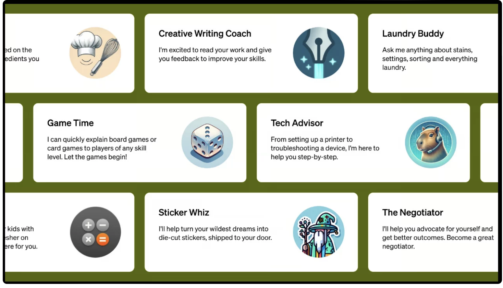

OpenAI DevDay Recap: Keynote
Main Idea
OpenAI가 최근 DevDay에서 발표한 최신 GPT모델 업데이트, 새로운 서비스 GPTs에 대한 정보 요약 및 느낀점
Key Points
- GPTs로 인해, 개인/스타트업 등이 손쉽게 자체 서비스를 만들 수 있음.
- GPT-4 모델이 반값됨. 황의 법칙, 무어의 법칙은 진리인듯함. 앞으로 더 싸질 것.
- Agents 기능 강화와 멀티모달 기능강화로 자동화, 이미지 인식, 처리, 음성 인식 및 처리가 더 쉽고 정확해짐.
Supporting Ideas
- GPT-4 Turbo: OpenAI의 새로운 모델로, 128,000 토큰 컨텍스트를 지원
- Json 모드: 출력을 json 형식으로만 제공
- 펑션 콜링 개선: 여러 함수를 동시에 처리
- Reproducible output: 동일한 시드 파라미터를 사용하면 동일한 결과 도출
- 데이터 학습기간: 2021년 9월부터 2023년 4월까지 반영
- 새로운 모달리티: GPT-4 Turbo with vision, 달리3, TTS등이 API로 제공
- Whisper V3: 오픈소스 모델로 API 제공 예정
- GPT-3.5 및 GPT-4파인튜닝: GPT-3.5의 16k 버전 공개되었고 GPT-4 파인튜닝은 일부 실험에 접근이 허용
- 커스텀모델: 특정 도메인 학습을 위한 모델 훈련이 가능
- Copyright shield: 엔터프라이즈와 API 사용자들을 위한 저작권 보호기능
- GPT-4 및 GPT-3.5 가격 인하: GPT-4의 가격이 대폭 인하
Conclusion
챗봇 분야에서 코딩의 영향력이 적어질것입니다. 코딩을 할 줄 알면 fine tuning이 가능하지만 proof of concept을 만들고 유용한 시나리오인지 판단하는 측면에서 코딩의 영향력이 적습니다.
앞으로 AI 영역에서 퍼블릭 클라우드의 영역이 줄어들 가능성이 큽니다.
자연어/이미지/음성 처리 분야에서는 GPT store가 App Store를 대체할 것입니다.
Open AI도 수익이 발생하는 곳은 기업 고객 시나리오라는 것을 잘 인지한 상태입니다. enterprise use case, security, data privacy, copyright 등을 논의한 지점이 그러합니다.
추가적으로 MS는 든든한 우군을 얻었으나 언제까지 속해있을지는 미지수입니다. 구글이나 아마존은 불안한 상태이지만 그들도 다른 준비를 하고 있기 때문에 계속해서 새로운 플랫폼이 나올 것입니다.
My Opinion
Low Price & High Speed & Large Volume
가격, 속도, 양 모두를 고려한 모델이 나왔기때문에 매우 환영할 만한 발전이라고 생각합니다.
우선 ‘가격 측면’에서 점점더 낮은 가격을 채택한 것은 이용자와 개발사 모두에게 좋은 선택이라고 생각합니다. 낮은 가격은 더 많은 고객을 유치하며, 이는 결과적으로 OpenAI의 성장을 촉진할 것으로 기대됩니다. 또한 현재 GPT 기반 서비스의 월 이용료가 약 30,000원으로 설정되어 있습니다. 이 가격은 컴퓨터와 모바일 기기에서 동시에 접속하여 매일 사용할 수 있는 권한을 제공하고 있지만, 현재로서는 합리적인 가격 수준에 있는 것은 아닙니다. 이 가격을 낮추는 아이디어를 검토한다면, GPT 기술을 보다 많은 사람들에게 접근 가능하게 만들고 상용화를 가속화시킬 수 있을 것으로 기대됩니다.
다음으로,‘속도 측면’을 고려한 모델 업그레이드는 매우 우수한 개선 사항입니다. 사용자 관점에서 가장 중요하게 고려되는 측면 중 하나가 바로 속도입니다. 서비스 이용 시 응답 및 도출 시간이 지연될 경우 사용자들에게 큰 불편을 초래할 수 있기 때문입니다. 현재 소요되는 시간이 느린 것은 아니지만, 엄청난 속도는 아니기 때문입니다. 진행되는 상황을 계속 보여주기 때문에 우수하지만, 입력 후 기다리는 동안 사용자들은 다른 업무를 보게 됩니다. 이를 해결하기 위한 시도는 탁월하다고 생각합니다.
세번째로, ‘양 측면’에서 더 많은 자료를 검색 창에 입력할 수 있도록 성능이 개선되었다고 생각합니다. 이전에는 입력 창에 너무 많은 내용을 입력하면 인식하지 못하는 경우가 있었지만, 앞으로는 하나의 문서, 발표 자료, 논문 등을 입력한 후에도 정확한 해석이 가능해질 것으로 기대합니다.
추가로 개선해야 할 점을 제언해보면, 폴더 구조 및 웹 사이트 URL을 인식하는 시스템을 개발하는 것이 필요하다고 생각합니다. 현재는 여러 폴더를 포함한 파일 구조를 처리하는 데에 어려움이 있으며, 사이트 URL을 입력하더라도 적절한 정보를 읽어오지 못하는 경우가 발생하고 있습니다. 특히 ‘hallucination’ 문제를 해결하는 것이 시급합니다. 한국어와 관련된 자료를 검색할 때 오류가 많이 발생하고 있어, GPT 한국지사의 설립을 통해 세밀한 조정이 가능할 것으로 기대합니다.
이러한 변화는 개발자, 컴퓨터 관련 업계 종사자, 인공지능 연구자 뿐만 아니라 일반 사용자들에게도 GPT를 일상적으로 활용할 수 있는 기회를 제공할 것으로 예상됩니다. 이러한 발전이 일어나면, GPT 기술을 더 폭넓게 보급하고 다양한 분야에서 활용할 수 있을 것입니다.
Writer : 고유정